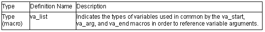

<stdarg.h>
Enables referencing of variable arguments for functions with such arguments.
The following macros are implementation-defined.

An example of a program using the macros defined by this standard include file is shown below.
Example:
1 #include <stdio.h>
2 #include <stdarg.h>
3
4 extern void prlist(int count, ...);
5
6 void main( )
7 {
8 prlist(1, 1);
9 prlist(3, 4, 5, 6);
10 prlist(5, 1, 2, 3, 4, 5);
11 }
12
13 void prlist(int count, ...)
14 {
15 va_list ap;
16 int i;
17
18 va_start(ap, count);
19 for(i=0; i<count; i++)
20 printf("%d", va_arg(ap, int));
21 putchar('\n');
22 a_end(ap);
23 }
Explanation
In this example, the number of data items to be output is specified in the first argument, and function prlist is implemented, outputting that number of subsequent arguments.
In line 18, the variable argument reference is initialized by va_start. Each time an argument is output, the next argument is referenced by the va_arg macro (line 20). In the va_arg macro, the type name of the argument (in this case, int type) is specified in the second argument.
When argument referencing ends, the va_end macro is called (line 22).
void va_start(va_list ap, parmN)
Description: Executes initialization processing for referencing variable parameters.
Header file: <stdarg.h>
Parameters: ap Variable for accessing variable parameters
parmN Identifier of rightmost argument
Example: #include <stdarg.h>
void va_list(int count, ...)
{
va_list ap;
va_start(ap, count);
}
Remarks: The va_start macro initializes ap for subsequent use by the va_arg and va_end macros.
The parameter parmN is the identifier of the rightmost parameter in the parameter list in the external function definition (the one just before the , ...).
To reference a function with no variable name, the va_start macro call must be executed first of all.
type va_arg(va_list ap, type)
Description: Enables referencing of the argument following the argument currently being referenced for a function with variable arguments.
Header file: <stdarg.h>
Return values: Parameter value
Parameters: ap Variable for accessing variable parameters
type Type of parameter to be accessed
Example: #include <stdarg.h>
va_list ap;
int ret;
ret=va_arg(ap, int);
Remarks: A variable of the va_list type initialized by the va_start macro is specified in the first parameter. The value of ap is updated each time va_arg is used, and as a result variable parameters are returned sequentially as return values of this macro.
Specify the type of the argument to be referenced at the type location in the calling procedure.
The ap parameter must be the same as the ap initialized by va_start.
It will not be possible to reference the parameters correctly if a type for which the size is changed by type conversion is specified when char type, unsigned char type, short type, unsigned short type, or float type in the function argument is specified as the type of type. If this kind of type is specified, operation will be undefined.
va_end(va_list ap)
Description: Terminates referencing of the arguments of a function with variable arguments.
Header file: <stdarg.h>
Parameters: ap Variable for accessing variable arguments
Example: #include <stdarg.h>
va_list ap;
va_end(ap);
Remarks: The ap parameter must be the same as the ap initialized by va_start. If the va_end macro is not called before the return from a function, the operation of that function will be undefined.